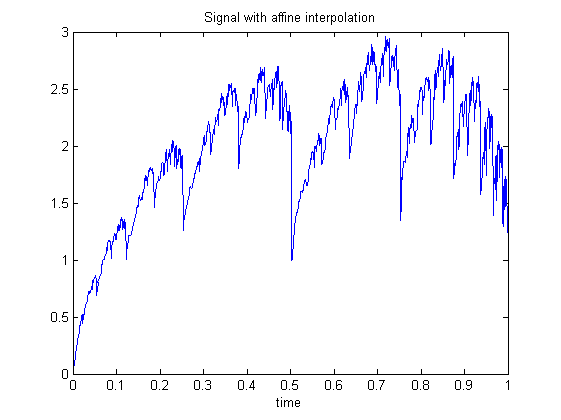

| FRACLAB Functions |
|
Generates a Fractal Interpolation Function based on Iterated Function System
IFS = ifsfif(N,MI,VC)
IFS = ifsfif(...,'Shape')
[IFS,Y] = ifsfif(...)
IFS = ifsfif(N,MI,VC) Generates the signal, IFS, using a sample size, N, interpolation points, arranged as a kx2 matrix, MI, and contraction coefficients, arranged as a column vector, VC. The parameter N is a positive integer and the parameters MI and VC are reals. With k interpolation points, (k-1) contraction coefficients are necessary.
IFS = ifsfif(...,'Shape') Generates the signal, IFS, using a specific type of interpolation. The supported Shapes can be choosen from the list below :
| Specifier | Interpolation Type |
|---|---|
| 'affine' | Affine interpolation (default) |
| 'sinusoidale' | Sinusoidale interpolation |
[IFS,Y] = ifsfif(...) Generates the fractal interpolation function, IFS, and returns at the same time the vector Y, containing the set of points corresponding to the abscissa of each point of the signal IFS.
N = 1024; t = linspace(0,1,N);
Mxx = [0 0;0.5 1;1 -1]; Myy = [0.5;0.9];
x = ifsfif(N,Mxx,Myy);
figure; plot(t,x);
title('Signal with affine interpolation'); xlabel('time');

N = 4096; Mxx = [0 0.5;0.7 -1;1 2;1.4 -2]; Myy = [0.5;-0.9;0.2];
[x,y] = ifsfif(N,Mxx,Myy,'sinusoidal');
figure; plot(y,x);
title('Signal with sinusoidal interpolation'); xlabel('y points');
[1] K. Daoudi, J. Levy Vehel and Y. Meyer "Construction of continuous functions with prescribed local regularity", Constructive Approximation, Vol. 014(03) (1998), 349-385.
[2] J. Levy Vehel and K. Daoudi "Generalized IFS for Signal Processing", IEEE DSP Workshop, Loen, Norway, September 1-4, 1996.
| |
genegwei | ifsgfif | |